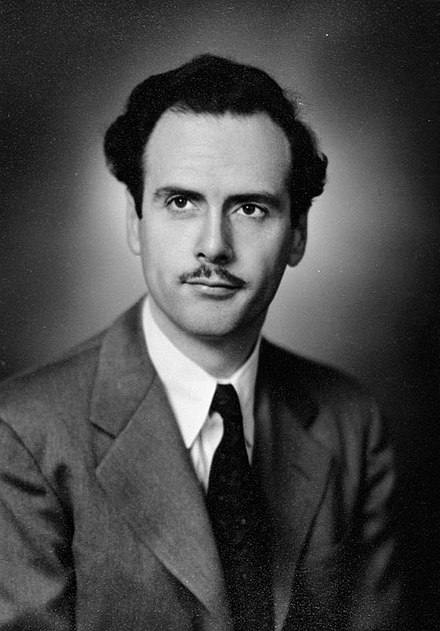

À propos de Marshall McLuhan
Marshall McLuhan 1911-1980 était un philosophe, universitaire et critique des médias canadiens. Il est considéré comme l'un des plus grands théoriciens des médias et de la communication du XXe siècle. McLuhan a exploré l'impact des médias sur la société, anticipant des aspects de l'ère numérique d'aujourd'hui. Sa célèbre phrase *"Le medium est le message"* résume l'idée que les technologies de communication influencent la façon dont nous percevons et comprenons le monde.
En tant que professeur à l'Université de Toronto, McLuhan a écrit plusieurs livres connus et a été un des premiers à prédire les effets de la mondialisation des communications. Son concept de village global reste particulièrement pertinent aujourd'hui.
